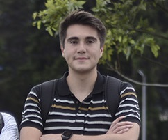
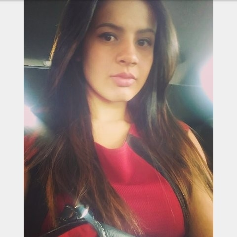

Usuarios del mes
Acá podrás ver a los usuarios más participativos del mes. Tú también puedes estar en esta sección ayudando a otros usuarios y acatando las reglas de la plataforma.
Nuestros usuarios del mes
|  | CamiloVivo actualmete en Bogotá, la capital de Colombia. Soy estudiante de Ingeniería de la Universidad Nacional de Colombia. Mi idioma nativo es el español y me gusta el inglés. |
|---|
KimMi país natal es Corea del Norte.Trabajo como interprete del coreano al español. Mi mayor meta es ser el mejor interprete de español del mundo. |
|---|
|  | PaulaMi país de origne es Colombia, vivo en Bogotá. Soy estudiante de Filología en la Universidad Nacional de Colombia. Mi idioma nativo es el español pero tengo un nivel avanzado en alemán. |
|---|
 |
LuisVivo en Miami, me dedico a la música, aún no se cantar muy bien pero me gustaría hacerlo algún día. Mi idioma natal es el español y me apasiona el italiano. |
|---|